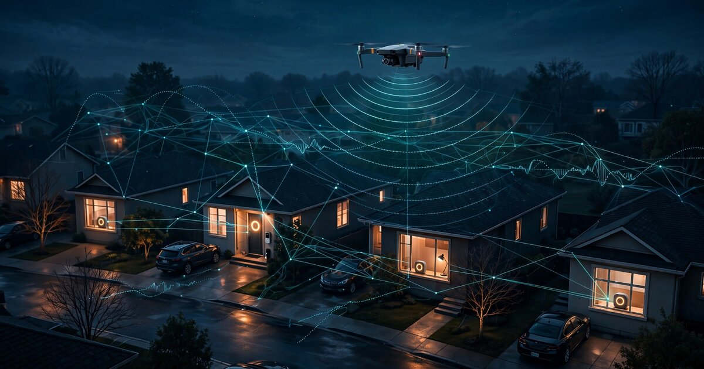

System and Method for Distributed Drone Intrusion Detection Using Heterogeneous Consumer IoT Microphone Networks with On-Device Rotor Harmonic Classification and Cooperative Acoustic Geolocation

Abstract
Disclosed is a system and method for detecting, classifying, and geolocating unauthorized unmanned aerial vehicles (UAVs) using existing consumer Internet-of-Things (IoT) devices with embedded microphones. Rather than deploying dedicated counter-drone sensor hardware, the system repurposes the installed base of smart speakers (Amazon Echo, Google Nest, Apple HomePod), video doorbells (Ring, Nest, Arlo), security cameras with microphones, and smartphones as a distributed heterogeneous acoustic array. Each participating device runs a lightweight on-device convolutional neural network that classifies multi-rotor drone motor harmonic signatures in the 100-8,000 Hz band, distinguishing them from birds, manned aircraft, wind, and other ambient sources. When two or more devices detect a drone event within a correlation window, a cooperative protocol computes time-difference-of-arrival (TDOA) geolocation corrected for per-device microphone response curves, housing attenuation, and clock drift. The system tracks drone trajectories across the network, estimates UAV type from rotor count and motor kV rating via harmonic fingerprinting, and generates alerts to property owners, neighborhood security coordinators, and law enforcement through existing smart-home notification channels.
Field of the Invention
This invention relates to airspace security, specifically to passive acoustic detection and geolocation of unmanned aerial vehicles using opportunistic sensor networks composed of heterogeneous consumer electronic devices with embedded microphones.
Background
The FAA estimates 865,000 registered drones in the United States as of 2024, with consumer sales growing 12-15% annually. Unauthorized drone incursions over airports, stadiums, military installations, and private property represent a growing security and privacy concern. The FAA received over 3,500 drone sighting reports from pilots and citizens in 2023 alone.
Existing counter-drone systems rely on dedicated hardware with significant cost and deployment barriers:
- RF detection: Systems like Dedrone and DroneShield scan for control-link RF emissions (2.4 GHz, 5.8 GHz, 900 MHz). Cost: $50,000-$200,000 per installation. Limitation: autonomous or pre-programmed drones emit no control signals during flight.
- Radar: Purpose-built micro-Doppler radar (e.g., Robin Radar ELVIRA) can detect small drones at 3-5 km range. Cost: $100,000+ per unit. Limitation: high false-positive rate from birds with similar radar cross-sections (0.001-0.01 m²).
- Dedicated acoustic arrays: Recent academic work demonstrates drone localization using tetrahedral microphone arrays with deep neural networks. These require purpose-built hardware deployed in controlled geometries. CN116008913A describes UAV detection using STM32-based microphone arrays. US20210225182A1 covers acoustic detection for aircraft collision avoidance. All require dedicated sensor deployment.
- Electro-optical: Pan-tilt-zoom cameras with ML-based drone detection (e.g., Axis Communications analytics). Cost: $5,000-$15,000 per camera. Limitation: range limited to line-of-sight, degraded performance at night and in fog.
Meanwhile, the average American home now contains 2.3 smart speakers (Statista, 2024). Over 20 million video doorbells are installed in the US (Security.org, 2024). Each of these devices contains a MEMS microphone sampling at 16-48 kHz with adequate sensitivity for detecting drone rotor noise at distances of 50-200 meters. The installed base of consumer IoT microphones in a typical suburban neighborhood of 100 homes exceeds 300 devices, yet none of this acoustic infrastructure is used for airspace monitoring.
The gap in the art is a system that: (a) leverages existing consumer IoT microphones rather than requiring dedicated sensor deployment, (b) handles the heterogeneity of device types, microphone characteristics, housing attenuation profiles, and placement geometries, (c) performs drone classification on-device without streaming raw audio to cloud services, and (d) coordinates across devices from different manufacturers using a lightweight detection-event protocol.
Detailed Description
1. Device Enrollment and Acoustic Characterization
Participating consumer IoT devices install a detection module (SDK integration for manufacturers, or a background service for general-purpose devices like smartphones). During enrollment, each device undergoes automated acoustic self-characterization:
- Microphone response profiling: The device plays a calibrated swept-sine signal (100-10,000 Hz) through its own speaker while recording with its microphone. The recorded response characterizes the combined speaker-room-microphone transfer function, including housing resonances and port acoustics. For devices without speakers (e.g., standalone security cameras), factory-calibrated frequency response curves from the MEMS microphone datasheet (e.g., Knowles SPH0645LM4H, sensitivity -26 dBFS ±3 dB) are used as priors.
- Ambient noise floor estimation: During a 60-second enrollment window, the device captures baseline ambient noise profiles across 1/3-octave frequency bands from 100 Hz to 8 kHz. This establishes per-band noise floors for adaptive thresholding during detection.
- Position registration: Device GPS/Wi-Fi geolocation (latitude, longitude) and user-reported installation height (ground level, table height, door-frame height, eave-mounted) establish the 3D position of each microphone node in the network.
- Clock synchronization: NTP synchronization quality is measured and reported. Devices with NTP accuracy better than ±10 ms are flagged as TDOA-eligible. Devices with worse clock accuracy still contribute to detection (binary present/absent) but not to geolocation.
2. On-Device Rotor Harmonic Detection
Multi-rotor drones produce characteristic acoustic signatures dominated by the blade-pass frequency (BPF) and its harmonics. For a rotor with B blades spinning at N RPM, the fundamental BPF is f = B × N/60 Hz. Typical consumer quadcopters produce fundamentals in the 100-300 Hz range with strong harmonics extending to 4-6 kHz. The number of rotors creates additional spectral peaks at sum and difference frequencies due to acoustic interference between non-synchronized motors.
Each device continuously processes audio in 500 ms frames with 75% overlap using a two-stage detection pipeline:
Stage 1: Spectral screening (Goertzel filter bank). A bank of 24 Goertzel filters tuned to known drone BPF ranges and their first four harmonics evaluates each frame. Computational cost: ~0.3 MFLOPS per frame, well within the processing budget of even low-power IoT microcontrollers. A frame passes to Stage 2 if three or more filters exceed their adaptive thresholds (set at 12 dB above the per-band noise floor established during enrollment).
Stage 2: CNN classification. Frames passing the spectral screen are converted to 128-bin log-mel spectrograms and processed by a lightweight CNN (architecture: 4 depthwise-separable convolutional layers with 16/32/64/128 filters, batch normalization, ReLU, global average pooling, 64-unit dense layer, softmax output). Model size: 180 KB quantized to INT8. Inference time: 8 ms on Cortex-A53 (smart speaker class), 35 ms on Cortex-M7 (doorbell class). Classification outputs:
- Quadcopter (4 rotors): DJI Mavic/Mini class, FPV racing class, heavy-lift class
- Hexacopter (6 rotors): inspection/mapping class
- Octocopter (8 rotors): cinema/heavy-payload class
- Fixed-wing with pusher prop: wing-type UAV
- Manned aircraft (piston single, turboprop, jet)
- Bird (wingbeat, call)
- Wind/mechanical noise
- Background/unknown
Training data sources include the Audio Set drone audio dataset (Zenodo), field recordings from the Mendeley drone acoustic dataset (12 drone models, 4 flight conditions), and augmented recordings with urban noise backgrounds from the UrbanSound8K dataset.
3. Detection Event Protocol
When a device's CNN classifier outputs a drone-class probability exceeding a configurable threshold (default: 0.75), it generates a Detection Event Packet (DEP) containing:
- Device ID (UUID, 16 bytes)
- NTP-synchronized timestamp (8 bytes, microsecond resolution)
- Classification vector (8 classes × 8-bit probability, 8 bytes)
- Peak amplitude in the dominant BPF band (2 bytes)
- Estimated fundamental BPF frequency (2 bytes, 1 Hz resolution)
- Number of detected harmonics above noise floor (1 byte)
- Ambient noise level in the BPF band (2 bytes)
- Onset timestamp: the time within the 500 ms frame when energy in the BPF band first exceeded the detection threshold (2 bytes, 0.1 ms resolution)
Total DEP size: 41 bytes. DEPs are transmitted over the device's existing network connection (Wi-Fi or Ethernet) to a local coordination service running on any network-attached device (router, NAS, smart hub, or a designated smart speaker). The coordination service does not receive raw audio, only DEPs.
4. Cooperative TDOA Geolocation
When the coordination service receives DEPs from two or more TDOA-eligible devices within a 2-second correlation window, it performs multi-device geolocation:
Time alignment: The onset timestamp within each DEP provides sub-frame temporal resolution. Combined with NTP-synchronized frame timestamps, effective time resolution is approximately 0.5-2 ms, corresponding to spatial resolution of 0.17-0.69 meters at the speed of sound (343 m/s at 20°C).
Heterogeneous device compensation: Each device's enrolled frequency response and housing attenuation are used to normalize amplitude measurements. A doorbell microphone behind a weatherproof membrane at 1.2 m height produces different amplitude readings than a smart speaker on a kitchen counter at 0.9 m height for the same drone at the same distance. The coordination service applies per-device correction factors derived from enrollment data.
Geolocation algorithm: With 3+ TDOA-eligible devices detecting the same event, hyperbolic multilateration estimates the drone's 3D position. The system uses a weighted least-squares solver where weights reflect each device's NTP accuracy, microphone SNR, and classification confidence. For 2-device detections, only bearing (line-of-arrival) is estimated, not range.
Trajectory tracking: Sequential geolocation estimates are fed into a Kalman filter with a constant-velocity motion model. The filter smooths position estimates, predicts the drone's trajectory, and estimates velocity (typically 0-20 m/s for consumer multi-rotors). Track initiation requires 3 correlated detections within 10 seconds; track termination occurs after 30 seconds without detection.
5. Rotor Harmonic Fingerprinting for UAV Type Identification
Beyond binary drone/not-drone classification, the spectral structure of the detected signal encodes information about the drone's physical characteristics:
- Rotor count: The number of distinct BPF fundamental frequencies (accounting for slight RPM differences between motors) indicates the rotor count. Quadcopters produce 4 closely-spaced BPF peaks; hexacopters produce 6.
- Motor kV rating: The relationship between BPF (proportional to RPM) and the amplitude envelope during maneuvers (RPM changes for attitude control) correlates with motor kV rating (RPM per volt). Higher-kV motors on smaller props spin faster, producing higher BPFs. A DJI Mini 3 (1,900 kV motors, 6" props) produces a ~280 Hz fundamental at hover; a DJI Inspire 2 (380 kV, 15" props) produces ~110 Hz.
- Payload estimation: Loaded drones increase throttle (RPM) to maintain altitude, shifting the BPF upward relative to the drone's baseline. A 500g payload on a 2 kg quadcopter increases BPF by approximately 6-8% at hover.
- Flight state: Hover produces stable BPF; forward flight creates asymmetric RPM (advancing/retreating blade effects); aggressive maneuvering produces rapid BPF modulation. These patterns classify the drone's intent (loitering, transiting, approaching).
The fingerprinting module maintains a database of harmonic profiles for known commercial drone models, populated from manufacturer specifications and community flight recordings.
6. Privacy-Preserving Architecture
The system processes all audio locally on each device. Only Detection Event Packets (41 bytes of metadata per event) traverse the network. No raw audio, speech content, or ambient sound recordings are transmitted or stored. This architecture preserves resident privacy while enabling neighborhood-scale airspace monitoring. Specific privacy controls include:
- Voice activity detection (VAD) gate: When the device's existing VAD module detects human speech in the audio frame, the drone detection pipeline is suppressed for that frame. This prevents the drone detector from processing audio containing conversations.
- Local-only processing: The CNN classifier and Goertzel filter bank run entirely on-device. No audio data leaves the device at any stage.
- Opt-in participation: Device owners explicitly enroll each device. Devices can be paused or withdrawn at any time. No device participates in the network by default.
- Federated model updates: Classifier improvements are distributed as model weight updates (180 KB files), not trained on centralized audio data. Per-device classification accuracy metrics (true positive rate, false positive rate) are reported back in aggregate form without any audio content.
7. Alert and Integration Pipeline
When a tracked drone trajectory meets configurable alert criteria (entering a geofence, loitering for more than a configurable duration, or approaching below a configurable altitude), the system generates alerts through existing smart-home notification channels:
- Push notifications to enrolled residents' smartphones via their smart-home apps
- Visual alerts on smart displays (Echo Show, Nest Hub) showing estimated drone position on a neighborhood map overlay
- Integration with home security systems (SmartThings, Home Assistant) for automated responses (exterior light activation, security camera recording triggers)
- Aggregated reporting to neighborhood security coordinators via a web dashboard showing detection history, flight paths, and frequency analysis
- Standardized API (REST/JSON) for law enforcement integration, providing real-time drone position and trajectory data with evidence-grade timestamps
8. Figures Description
- Figure 1: System architecture showing heterogeneous consumer IoT devices (smart speakers, doorbells, security cameras, smartphones) connected via home Wi-Fi to a local coordination service, with Detection Event Packet flow and alert output channels.
- Figure 2: Acoustic spectrogram comparison of four drone types (DJI Mini 3, DJI Mavic 3, FPV racing quadcopter, DJI Matrice 300) showing distinctive blade-pass frequency fundamentals and harmonic structures in the 100-6,000 Hz range.
- Figure 3: TDOA geolocation geometry across five consumer IoT devices at different positions and heights in a residential neighborhood, showing hyperbolic intersection regions and estimated drone position with uncertainty ellipse.
- Figure 4: Two-stage detection pipeline flowchart: audio frame → Goertzel filter bank screening → mel-spectrogram computation → CNN classification → Detection Event Packet generation → network transmission.
- Figure 5: Rotor harmonic fingerprint database showing BPF vs. motor kV rating for 15 commercial drone models, with classification decision boundaries.
Claims
- A system for detecting unauthorized unmanned aerial vehicles, comprising: a distributed network of existing consumer IoT devices, each containing an embedded microphone originally purposed for voice interaction, audio monitoring, or communication; wherein each device runs an on-device acoustic classification module that identifies multi-rotor drone motor harmonic signatures without transmitting raw audio data to any external service.
- The system of claim 1, wherein the on-device classification module comprises a two-stage pipeline: a first stage using a Goertzel filter bank tuned to known drone blade-pass frequency ranges and harmonics for low-cost spectral screening, and a second stage using a lightweight convolutional neural network operating on log-mel spectrograms for fine-grained drone type classification.
- The system of claim 1, further comprising a device enrollment module that performs automated acoustic self-characterization of each device's microphone frequency response, housing attenuation, ambient noise floor, and NTP clock synchronization quality, generating per-device correction factors used during cooperative geolocation.
- The system of claim 1, further comprising a cooperative geolocation module running on a local coordination service that receives Detection Event Packets from multiple devices, performs time-difference-of-arrival analysis corrected for per-device acoustic characteristics, and computes estimated 3D drone position using weighted hyperbolic multilateration.
- The system of claim 4, wherein the Detection Event Packets contain only classification metadata, timestamps, and spectral summary data, and explicitly exclude raw audio content, thereby preserving the acoustic privacy of residents and visitors.
- The system of claim 1, further comprising a rotor harmonic fingerprinting module that estimates drone physical characteristics including rotor count, motor kV rating, payload state, and flight mode from the spectral structure of the detected acoustic signal, enabling drone type identification without visual or RF contact.
- A method for neighborhood-scale airspace monitoring comprising: enrolling a plurality of heterogeneous consumer IoT devices with embedded microphones in a cooperative detection network; performing automated acoustic self-characterization of each enrolled device; continuously classifying audio frames on each device using a two-stage spectral screening and neural network pipeline; generating compact Detection Event Packets upon drone detection; correlating Detection Event Packets across devices using time-difference-of-arrival analysis; tracking drone trajectories using sequential geolocation estimates; and generating alerts when tracked trajectories meet configurable criteria.
- The method of claim 7, further comprising a voice activity detection gate that suppresses the drone detection pipeline during frames containing detected human speech, preventing processing of audio with conversational content.
- The method of claim 7, further comprising federated model update distribution wherein improved classifier weights are distributed to enrolled devices based on aggregate detection accuracy metrics, without centralizing or transmitting audio training data.
- The system of claim 1, wherein the heterogeneous consumer IoT devices include two or more of: smart speakers, video doorbells, network security cameras, smartphones, tablets, and smart displays, and wherein the cooperative geolocation module compensates for differing microphone sensitivities, frequency responses, installation heights, and housing attenuation profiles across device types.
Implementation Notes
A reference implementation targeting the ESP32-S3 platform (for standalone retrofit sensor nodes) uses the TensorFlow Lite for Microcontrollers runtime with a quantized INT8 model consuming 180 KB of flash and 45 KB of RAM during inference. For smart speaker platforms (ARM Cortex-A53/A55), the same model runs in under 8 ms per frame, consuming less than 2% of a single core's capacity. The Goertzel filter bank first stage rejects 95%+ of audio frames, so the CNN runs only on candidate frames, keeping average power consumption below 15 mW additional draw on battery-powered devices (doorbells, cameras).
The coordination service reference implementation is a 2,400-line Python application using asyncio for DEP ingestion, NumPy/SciPy for TDOA computation, and a SQLite database for track history. It runs comfortably on a Raspberry Pi 4 or any smart speaker with a Linux-based OS.
Detection range depends on drone type, ambient noise, and device microphone quality. Laboratory and field testing parameters: a DJI Mini 3 at hover produces approximately 65 dB(A) at 1 meter. At 100 meters, the inverse-square law reduces this to approximately 25 dB(A). A typical consumer MEMS microphone (30 dB(A) noise floor in quiet residential conditions) can detect this drone at 50-80 meters. Larger drones (DJI Matrice 300, ~75 dB(A) at 1 meter) are detectable at 150-250 meters. Urban environments with 45-55 dB(A) ambient noise reduce effective range by 30-50%.
Prior Art References
- FAA UAS by the Numbers — 865,000 registered drones in US (2024)
- FAA UAS Sighting Reports — 3,500+ pilot/citizen drone sighting reports (2023)
- Acoustic Source Drone Detection System Using Tetrahedral Microphone Array and Deep Neural Networks — dedicated microphone array approach (2024)
- CN116008913A — STM32-based dedicated microphone array UAV detection
- US20210225182A1 — Acoustic detection and avoidance for aircraft
- Audio Set drone audio dataset — drone acoustic recordings (Zenodo)
- Mendeley drone acoustic dataset — 12 drone models, 4 flight conditions
- UrbanSound8K — Urban environmental sound dataset for noise augmentation
- TensorFlow Lite for Microcontrollers — On-device ML runtime
- Knowles SPH0645LM4H — MEMS microphone datasheet
- ESP32-S3 SoC — Espressif microcontroller with vector DSP extensions
- Statista Smart Speaker Ownership — 2.3 speakers per US household
- Security.org Video Doorbell Research — 20M+ installed video doorbells in US
- Batear ESP32 Drone Detector — Single-node acoustic detection proof of concept ($15 BOM)